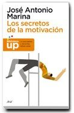
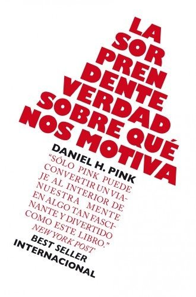

Libros de motivación, objetivos y rendimiento personal
Libros de motivación, objetivos y rendimiento personal en español: 12 libros completos para leer gratis aquí mismo y 10 fichas de títulos actuales.
Psicología de la motivaciónEstablecimiento de metasObjetivos a largo plazoPerseveranciaPersistenciaOrientación al logroMotivación intrínsecaMotivación extrínsecaTeoría de la autodeterminaciónMotivación de logroMotivación de afiliaciónMotivación de poderAutoeficaciaExperiencia de flujo o flowMentalidad de crecimientoMiedo al fracasoExpectativas de éxito
Videojuegos comerciales de realidad virtual inmersiva en neurorrehabilitaciónMartín Nogueras, Ana María; Lillo-Sánchez, Elena; Gomez Mateos, Marta; Bermejo Gil, Beatriz María; Calleja-Caballero, Andrea; Llamas Ramos, Rocío; Orejuela-Rodríguez, Jesús; Sánchez González, Juan Lui
Videojuegos comerciales de realidad virtual inmersiva en neurorrehabilitaciónMartín Nogueras, Ana María; Lillo-Sánchez, Elena; Gomez Mateos, Marta; Bermejo Gil, Beatriz María; Calleja-Caballero, Andrea; Llamas Ramos, Rocío; Orejuela-Rodríguez, Jesús; Sánchez González, Juan LuiPISA 2015: rendimiento y su relación con el sentimiento de pertenencia, motivación y ansiedad en estudiantes de alto rendimientoBausela Herreras, Esperanza
PISA 2015: rendimiento y su relación con el sentimiento de pertenencia, motivación y ansiedad en estudiantes de alto rendimientoBausela Herreras, EsperanzaObemat 2.0. Programa para el tratamiento de la obesidad infantil: Fichas de material motivacional y educativoVerónica Luque; Albert Feliu; Núria Guillen; Ricardo Closa Monasterolo; Joaquín Escribano; Natalia Ferré; Desirée Gutiérrez Marín
Obemat 2.0. Programa para el tratamiento de la obesidad infantil: Fichas de material motivacional y educativoVerónica Luque; Albert Feliu; Núria Guillen; Ricardo Closa Monasterolo; Joaquín Escribano; Natalia Ferré; Desirée Gutiérrez Marín¿ ... y como eliges tu profesión? : motivaciones y factores que influyen en la elección de una carrera profesional en estudiantes de Estudios Generales Letras y Sociología de la PUCPBobadilla, Percy
¿ ... y como eliges tu profesión? : motivaciones y factores que influyen en la elección de una carrera profesional en estudiantes de Estudios Generales Letras y Sociología de la PUCPBobadilla, PercyCómo orientar la gestión de la carrera profesionalJoana Carneiro Pinto, Maria do Céu Taveira, Juan Llanes-Ordóñez
Cómo orientar la gestión de la carrera profesionalJoana Carneiro Pinto, Maria do Céu Taveira, Juan Llanes-OrdóñezManual de prácticas de motivación y emociónPalmero, Francisco; Gómez-Íñiguez, Consolación; Guerrero Rodríguez, Cristina; Carpi Ballester, Amparo
Manual de prácticas de motivación y emociónPalmero, Francisco; Gómez-Íñiguez, Consolación; Guerrero Rodríguez, Cristina; Carpi Ballester, AmparoCinco hilos para tirar de la motivación y el esfuerzoUniversitat de Barcelona. Institut de Ciències de l'Educació; Escaño, José; Gil de la Serna, María
Cinco hilos para tirar de la motivación y el esfuerzoUniversitat de Barcelona. Institut de Ciències de l'Educació; Escaño, José; Gil de la Serna, MaríaReglas y consejos sobre investigación científica (Los tónicos de la voluntad)Santiago Ramón y Cajal
Reglas y consejos sobre investigación científica (Los tónicos de la voluntad)Santiago Ramón y CajalLos procesos de aprendizaje y motivaciónCarmelo P. Cubillas
Los procesos de aprendizaje y motivaciónCarmelo P. CubillasPsicología del aprendizaje y la motivación, septiembre 2021Cubillas, Carmelo P.
Psicología del aprendizaje y la motivación, septiembre 2021Cubillas, Carmelo P.Motivación y emoción, septiembre 2019Limonero, Joaquín T.; Alvarez Moleiro, Maria; Rovira, Tatiana; Sanz, Antoni; Casacuberta, David; Villamarín Cid, Francisco; Baena, Antoni; Mañas Mañas, Israel; Moreno Sánchez, Jordi; Quesada Laborda,
Motivación y emoción, septiembre 2019Limonero, Joaquín T.; Alvarez Moleiro, Maria; Rovira, Tatiana; Sanz, Antoni; Casacuberta, David; Villamarín Cid, Francisco; Baena, Antoni; Mañas Mañas, Israel; Moreno Sánchez, Jordi; Quesada Laborda, Motivación y emoción. Módulo 1: MotivaciónJoaquín T. Limonero, Maria Álvarez Moleiro, Tatiana Rovira
Motivación y emoción. Módulo 1: MotivaciónJoaquín T. Limonero, Maria Álvarez Moleiro, Tatiana RoviraInquebrantablesDaniel Habif
InquebrantablesDaniel HabifLos secretos de la motivaciónJosé Antonio Marina
Los secretos de la motivaciónJosé Antonio Marina
La sorprendente verdad sobre qué nos motivaDaniel H. Pink
La sorprendente verdad sobre qué nos motivaDaniel H. Pink
Los 7 hábitos de los adolescentes altamente efectivosSean Covey
Los 7 hábitos de los adolescentes altamente efectivosSean CoveyLos 7 hábitos de la gente altamente efectivaStephen R. Covey
Los 7 hábitos de la gente altamente efectivaStephen R. CoveyLa buena suerteÁlex Rovira y Fernando Trías de Bes
La buena suerteÁlex Rovira y Fernando Trías de BesEl vendedor más grande del mundoOg Mandino
El vendedor más grande del mundoOg MandinoFluir (Flow). Una psicología de la felicidadMihaly Csikszentmihalyi
Fluir (Flow). Una psicología de la felicidadMihaly CsikszentmihalyiGrit. El poder de la pasión y la perseveranciaAngela Duckworth
Grit. El poder de la pasión y la perseveranciaAngela DuckworthMindset. La actitud del éxitoCarol S. Dweck
Mindset. La actitud del éxitoCarol S. DweckTemas relacionados
¿Estás eligiendo carrera?
Haz gratis el test de orientación vocacional de AURZANE: intereses, aptitudes, autoconcepto y hábitos de estudio, con informe completo.